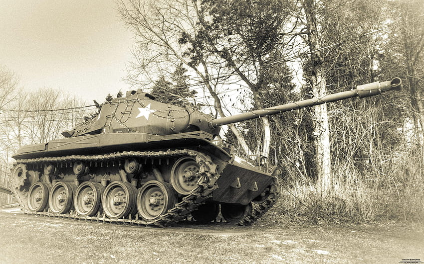
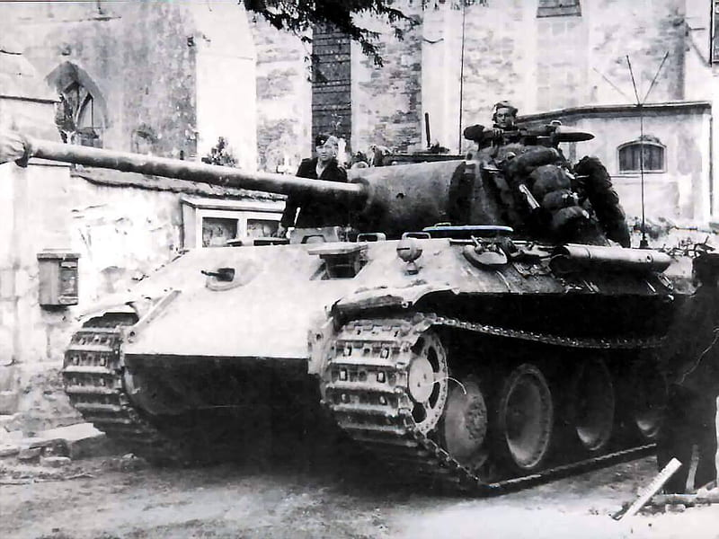

Introduccion
A principios de la Segunda Guerra Mundial, los tanques eran bastante diferentes de los diseños modernos que conocemos hoy en día. En esa época, los tanques estaban en una fase temprana de desarrollo y evolución, y su diseño y capacidad variaban significativamente entre las diferentes naciones beligerantes

Tamaño y velocidad: Los tanques de la época tendían a ser más pequeños y más lentos que los modelos
posteriores. Su velocidad máxima variaba, pero generalmente era relativamente baja en comparación con
los tanques modernos.
Blindaje: El blindaje de los tanques de la Segunda Guerra Mundial era más delgado en comparación con los
tanques posteriores. Estaban diseñados principalmente para resistir armas ligeras, como rifles y
ametralladoras, en lugar de proyectiles de mayor calibre.
Armamento: Los tanques iniciales generalmente estaban equipados con una combinación de ametralladoras y
cañones de pequeño calibre. A medida que avanzaba la guerra, se incorporaron cañones de mayor calibre y
mayor potencia.
Comunicación y navegación: Los sistemas de comunicación y navegación eran rudimentarios en comparación
con la tecnología moderna. Los tanques dependían de mapas y brújulas para la navegación y la
comunicación se realizaba principalmente mediante señales manuales o luces.
Movilidad: La movilidad todavía era un desafío. Los tanques a menudo tenían problemas para superar
terrenos difíciles y eran propensos a atascarse o quedar inmovilizados.
Autonomía: La autonomía de los tanques variaba, pero generalmente no eran capaces de operar durante
largos períodos sin reabastecimiento de combustible y municiones
The use of tanks in the ww2
Una de las batallas de tanques más famosas de la Segunda Guerra Mundial ocurrió durante la Batalla de Berlín. El Ejército Rojo Soviético, equipado con tanques como el T-34 e IS-2, avanzó hacia Berlín, la capital de la Alemania nazi. Se libraron feroces batallas de tanques en las calles de Berlín mientras las fuerzas soviéticas se acercaban a la ciudad. El uso de tanques fue fundamental en la captura final de Berlín por parte de los Aliados. En el Frente Occidental, las fuerzas aliadas, principalmente estadounidenses y británicas, utilizaron tanques de manera extensiva en su avance final hacia Alemania. El M4 Sherman y el tanque británico Centurion estuvieron entre los tanques utilizados por estas fuerzas. Se produjeron batallas de tanques y escaramuzas a medida que las fuerzas aliadas cruzaban el río Rin y avanzaban hacia Alemania. Asi un sin numero de batalla que fueron llevadas a cabo en el transcurso de la ww2, entre estas se destacan la blitzkrieg alemana que priorizaba el uso de tanques y blindado... vehiculos mecanizados que optimizaban la funcion de los ejercitos alemanes. De manera que los ejercitos del mundo comenzaron a copiar el modelo aleman.

Después de la derrota de la Alemania nazi en Europa, la Unión Soviética volvió su atención hacia Japón. En agosto de 1945, las fuerzas soviéticas lanzaron una ofensiva masiva contra territorios en Manchuria y Corea en manos de Japón. Los tanques, incluyendo el IS-2, desempeñaron un papel significativo en estas operaciones, lo que contribuyó a la decisión de Japón de rendirse. En resumen, los tanques desempeñaron un papel vital en las etapas finales de la Segunda Guerra Mundial, contribuyendo a las victorias de las fuerzas aliadas tanto en Europa como en el Pacífico. El conflicto vio el uso de una variedad de tanques, con la Unión Soviética, Estados Unidos y el Reino Unido siendo importantes usuarios de vehículos blindados en las batallas finales de la guerra.
